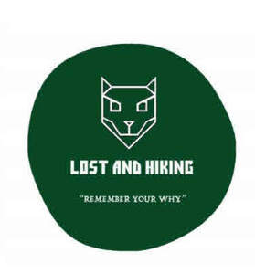

Trade Mark Journal No.2026/005 30 January 2026
UK00004325789 18 January 2026 (16,18,25,35,41)

- Class 16
- Journals; Blank writing journals; Blank journals; Blank journal books; Travel magazines; Magazines [periodicals]; Travel books; Printed periodicals in the field of tourism; Jackets of paper for books; Writing books; Travel guide books; Educational publications; Magazines; Periodical publications; Activity books; Exercise books; Books; Printed publications; Publications (Printed -).
- Class 18
- Hiking rucksacks; Hiking poles; Hiking bags; Hiking sticks; Trekking sticks; Nordic walking sticks; Camping bags; Mountaineering sticks; Sticks (Mountaineering -); Folding walking sticks; Walking sticks.
- Class 25
- Hiking boots; Hiking shoes; Trekking boots; Climbing boots [mountaineering boots]; Climbing boots; Mountaineering shoes; Mountaineering boots; Walking boots; Climbing footwear; Clothing for skiing; Walking shoes; Jogging shoes; Walking shorts; Jogging pants; Walking breeches; Mountaineering gloves; Jogging bottoms [clothing]; Jogging bottoms; Jogging tops; Jogging outfits; Yoga shoes; Beach footwear; Ski pants; Gym boots; Boots for sports; Beach shoes; Jogging suits; Leisure shoes; Ski trousers; Yoga socks; Leisure footwear; Boots for sport; Jogging sets [clothing]; Sports clothing [other than golf gloves]; Articles of sports clothing; Articles of clothing.
- Class 35
- Outdoor advertising; Arranging subscriptions to electronic journals; Subscriptions (arranging of) to books, reviews, newspapers or comic books; Providing advertising space in periodicals, newspapers and magazines; Arranging subscriptions of the online publications of others; Arranging of subscriptions for the publications of others; Arranging subscriptions to publications for others; Advertising in periodicals, brochures and newspapers.
- Class 41
- Recreational services relating to hiking; Conducting guided climbing tours; Conducting guided walking tours; Recreational services relating to back-packing; Tuition in recreational pursuits; Sporting and recreational activities; Publishing of journals; Publication of books, magazines, almanacs and journals; Publication of journals; Multimedia publishing of magazines, journals and newspapers; Publishing of electronic books and journals online; Online publication of electronic books and journals; Multimedia publishing of journals; Publication of electronic books and journals online; Publishing of electronic books and journals on-line; On-line publication of electronic books and journals; Publication of electronic books and journals on-line; On-line publication of electronic books and journals (non-downloadable); On-line publication of electronic books and journals [not downloadable]; Publishing of books, magazines; Online electronic publishing of books and periodicals; Electronic online publication of periodicals and books; Publishing services for books and magazines; Publication of newspapers, periodicals, catalogs and brochures; Publication of electronic books and periodicals on the Internet; Publishing of electronic publications; Publication of magazines; Magazines (Publication of -); Publication of online guide books, travel maps, city directories and listings for use by travellers, not downloadable; Publication of books; Books (Publication of -); Publishing of books and reviews; Publishing of books; Publishing of instructional books; Publication of educational books; Multimedia publishing of magazines; Publication of electronic magazines; Services for the publication of travel guides; Online publications, namely blogs; Publication of periodicals and books in electronic form; Publication of periodicals; Publication of books, reviews; Publication of audio books; Multimedia publishing of books; Multimedia publishing of electronic publications; Services for the publication of magazines; Services for the publication of books; Services for the publication of guide books; Publishing of maps; Publication of directories relating to travel; Publishing services for periodical and non-periodical publications, other than publicity texts; Publishing services for books; Publication of instructional literature; Publishing of web magazines.
Simon Robinson